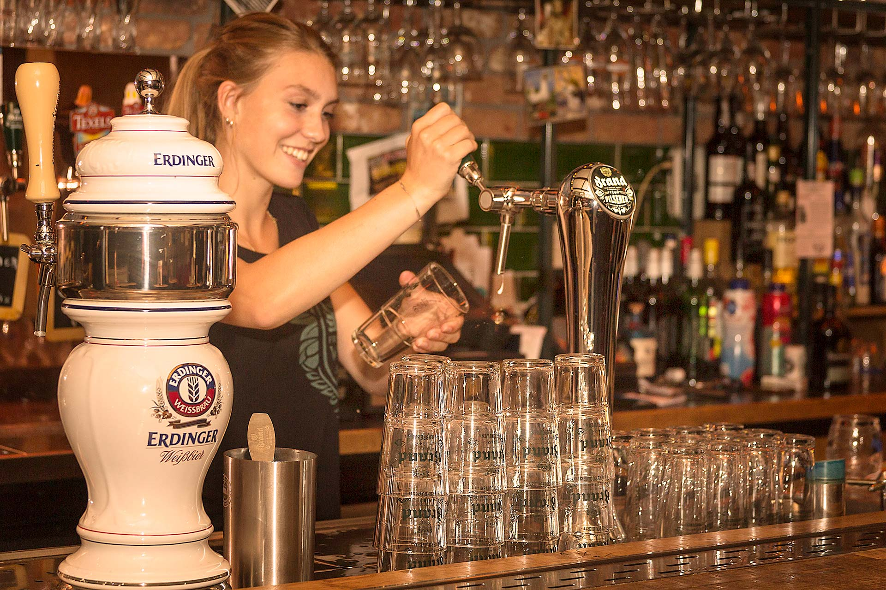
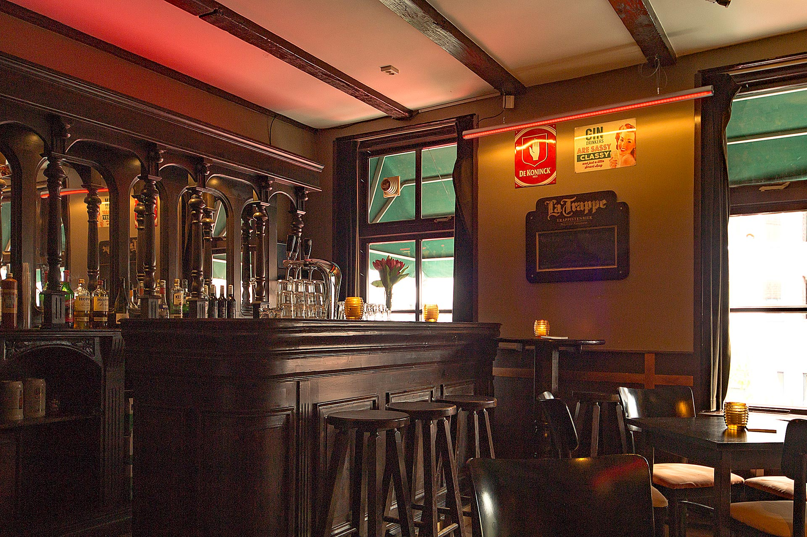
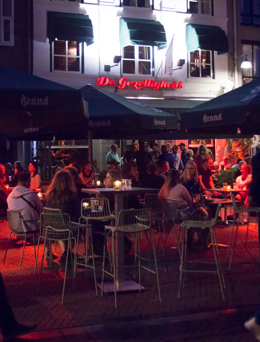

6,7%
Dubbele Verrassing
Dubbel, bovengistend
Robijnbruin, met zachtbitter hop- en caramelmout.

ABT-speciaalbiercafé · Gasthuisplein, Zwolle
Zestien tapkranen, een 120-tal flesbieren en elke maand bieren die nergens anders in Nederland nog zijn getapt. Tchin Tchin!
Wij zijn een ABT-speciaalbiercafé, gevestigd in een monumentaal pand in het centrum van Zwolle. Met 16 tapkranen en een 120-tal flesbieren heeft De G voor elke bierliefhebber iets te bieden. Daarnaast bieden we verschillende evenementen en mogelijkheden in ons café. Voor besloten feesten hebben we een erg leuke zaal op de bovenverdieping.
Hopelijk tot ziens in ons gezellige biercafé, waar we natuurlijk ook wijn en andere drankjes serveren.
De kasteleins van Café De Gezelligheid

Eigen (seizoens)bieren, gebrouwen in de catacomben van kloosterbrouwerij Axes Castellum.
6,7%
Dubbel, bovengistend
Robijnbruin, met zachtbitter hop- en caramelmout.
5,6%
Session IPA
Met vlierbloesem en een frisse, zomerse afdronk.
6,5%
Bockbier
Het eerste bier speciaal voor het café: krachtig, donker koperen kleur.
Naast de eigen bieren hebben we alle speciaalbieren van de Brand brouwerij uit Limburg, daarom mogen we ons Brand-proeflokaal noemen. Hieronder de kaart.
Ook op de kaart Corona, Hertog-Jan
Ook op de kaart Affligem Blond, Affligem Tripel, Lagunitas IPA, Vedett Extra Ordinary IPA, Vedett Extra Blond, Brugse Zot Blond, La Chouffe, Duvel Tripel Hop, Tripel Karmeliet, Straffe Hendrik Wilde Gist, Duvel, Pauwel Kwak, Kasteel Blond
Ook op de kaart Affligem Dubbel, Guinness Draught, Erdinger Dunkel, Kasteel Bruin
Ook op de kaart Desperados, Premium Kriek Lambic, Erdinger Weizen, Vedett Extra White, Lindemans Oude Geuze, Lindemans Geuze
Ook op de kaart Heineken 0.0, Amstel Radler 0.0, Amstel Radler 2.0, Erdinger Alkoholfrei, Löwlander 0.0, Sportzot 0.0
Trappisten Westmalle Dubbel, Westmalle Tripel, Rochefort 6, Rochefort 8, Rochefort 10, La Trappe Tripel, La Trappe Quadrupel, Orval
Cider Bear Cider
Maandelijks wisselend ABT-bier. Vraag een van onze medewerkers naar het bier van de maand.
Nog 12 bieren van 't vat. Informeer bij de bar of bij een van onze collega's.
Alle bieren op Untapped. Scan de QR-code in het café en kies voor 'continu' om te zien wat er nu getapt wordt.
Bier mee naar huis? Kijk op bierwinkeldegezelligheid.nl.
Sinds 2016 zijn wij als enige in Zwolle aangesloten bij de Alliantie van Biertapperijen (ABT), een vereniging in Nederland waar speciaalbiercafés lid van kunnen worden. Het smakelijke voordeel: elke maand schenken we bieren die verder in Nederland nog nooit eerder zijn getapt of geschonken.
De tap- en flesbieren worden wereldwijd ingekocht. Zo is er voor u en voor ons altijd iets lekkers om te proeven. Meer over de vereniging op alliantievanbiertapperijen.nl.

Café De Gezelligheid heeft in april 2005 voor het eerst de deuren geopend. Het monumentale pand kreeg destijds een flinke opknapbeurt, buiten en binnen. We begonnen als bruin café, met enige speciale bieren. In de loop der jaren is onze voorliefde voor bier behoorlijk gegroeid: van 6 tapkranen naar 16.
Omdat we bij de Alliantie van Biertapperijen zijn aangesloten, proeft u bij ons bieren die nog nergens anders zijn gedronken. Elke maand weer nieuwe, zowel fles als tap.
We begonnen in 2005 met drie kasteleins. Intussen is het een reuze gezellig team. Ronald, net als wij bier sommelier, werkt al enige jaren bij ons en vergaart veel bierinfo voor onze bierkaart. Lisette, Robin en Marleen zijn ook in vast dienstverband. Daarnaast staan Rolant, Charlotte, Samira en Veere regelmatig achter de toog.
Voor bierliefhebbers, muziekliefhebbers, vriendengroepen en bedrijfsborrels. Elk café claimt gezellig te zijn, maar wij zijn De Gezelligheid. Tot ziens, Jos en Hilde Piening, eigenaren.
Op de eerste verdieping van ons pand vindt u het zaaltje van het café: geschikt voor feestjes, vergaderingen, workshops en andere besloten gelegenheden, vooral voor groepen van 20 tot 50 personen.
In de huurprijs zitten muziek, glaswerk, meubilair en koelingen. Schoonmaak is inbegrepen, mits het zaaltje veegschoon wordt achtergelaten. Andere service-artikelen gaan in overleg. Wijn gaat per fles van 0,75 l, frisdrank per fles van 1,1 l.
Reserveren doet u per e-mail: info@cafedegezelligheid.nl. Of bel ons.
Nevenactiviteiten Naast zaalverhuur organiseren we proeverijen en biertap trainingen, en is er het stadsomroepersmuseum Ome Bertus. Informeer naar de mogelijkheden.
Zwolle heeft als enige stad in Nederland een stads- en dorpsomroepersmuseum. Het is te vinden in de gewelven onder café De Gezelligheid. Te zien zijn onder meer oude ansichtkaarten met omroepers, bellen, beeldjes en kostuums.
Op 27 december 1995 installeerde burgemeester Jan Franssen Peter Vader als stadsomroeper van Zwolle. Hij won vele prijzen, waaronder twee keer het Nederlands kampioenschap. Hij verzorgt ook een ludieke stadswandeling, de 'Ome Bertus-wandeling'.
Het museum is te bezoeken tijdens de wandeling en op afspraak met Peter Vader. De wandeling is ook te boeken via stadswandelingenzwolle.nl.
De Gezellige Bikers gaan met een fietstocht hun steentje bijdragen om voor alle kinderen een goede en onbezorgde jeugd te realiseren, ten bate van Het Vergeten Kind. U kunt ons al met een klein bedrag sponsoren. Help ons deze kinderen te helpen. Sponsor ons via de mail.
038 - 331 91 40
info@cafedegezelligheid.nl
| Maandag t/m donderdag | vanaf 16.00 uur |
|---|---|
| Vrijdag, zaterdag, zondag | vanaf 14.00 uur |
KvK 5077467 · BTW NL8142.529.53.B01